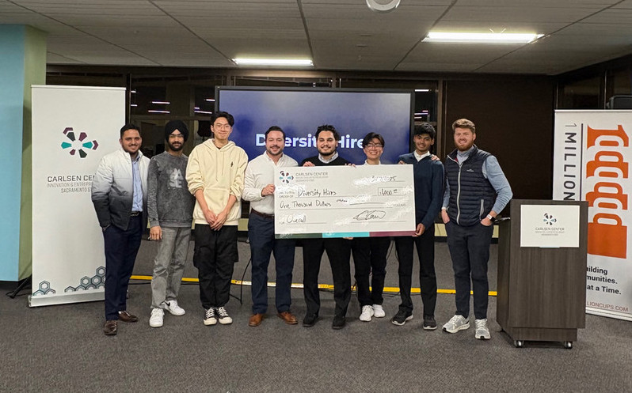

CAPITAL HACKS
SPRING 2025
Education category winner and overall winner.
WINNING IDEA // GULP AAC
An AAC product designed around gestalt language processing, meaningful phrases, scripts, audio, and video—not a one-size-fits-all communication grid.
← BACK TO ALL WINNERS
Education category winner and overall winner.
Project: GuLP AAC
GuLP AAC is now a public-facing product and community for nonspeaking and minimally speaking people, families, educators, caregivers, and speech-language pathologists.